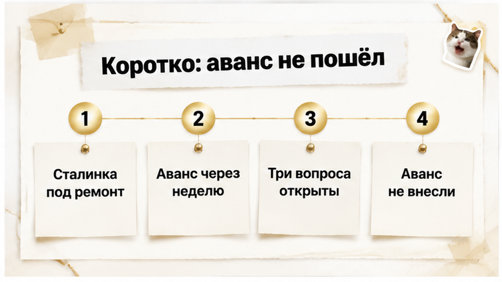
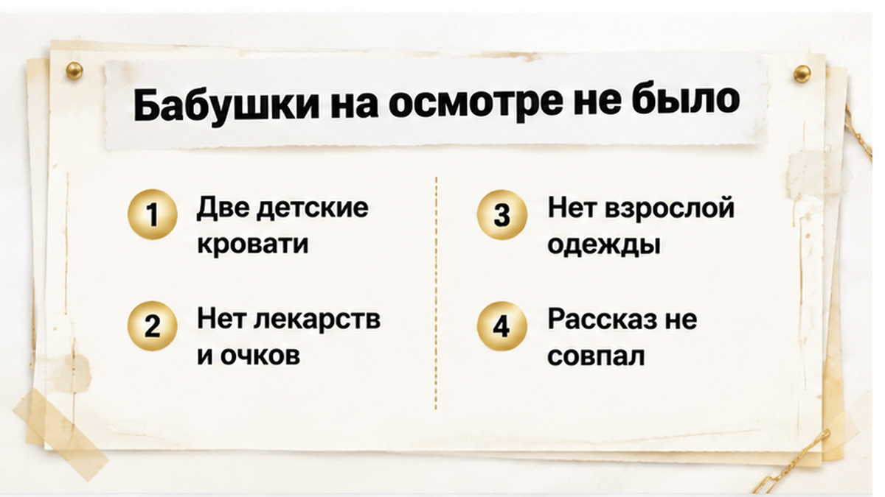
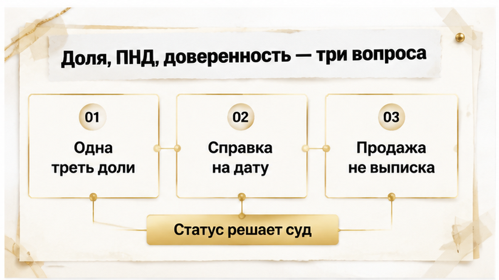
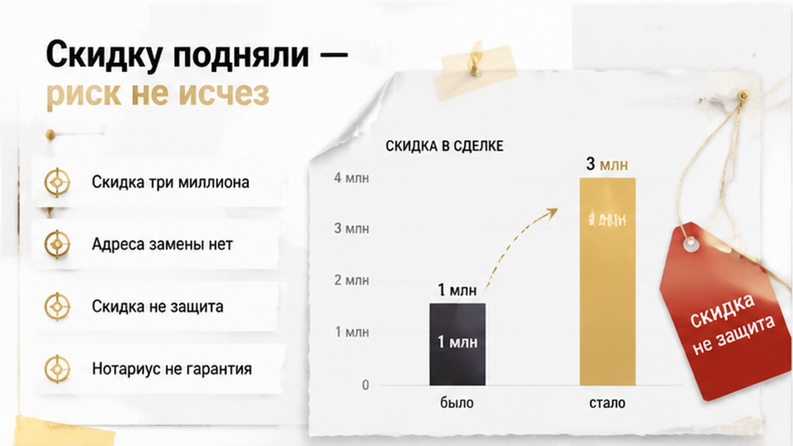
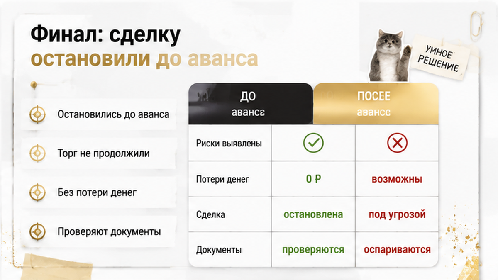
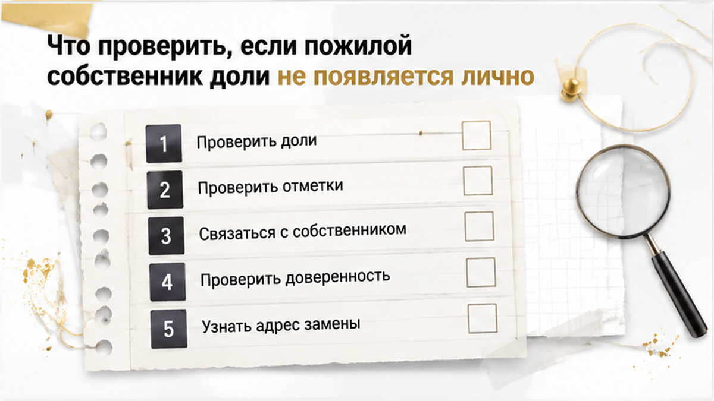

В августе 2026 года в Тюмени я остановил сделку до аванса. Не на регистрации, не после подписания — до первых денег. Причина бытовая до смешного: в квартире стояли три кровати, и ни одна не принадлежала собственнице одной трети.
Сталинка под ремонт. Метраж хороший, место хорошее, цена уже ниже рынка. Продавцы говорили то, что говорят в таких случаях: «Здесь живёт бабушка и наша семья». Бабушка — собственница 1/3 по приватизации, доля продаётся по нотариальной доверенности, «нотариус же проверял».
На просмотре я увидел две детские кровати и одну двуспальную. Взрослых спальных мест ровно столько, сколько нужно семье продавцов. Ни лекарств, ни одежды, ни очков, ни фотографий — ничего от пожилого человека, который здесь якобы живёт много лет.
Дальше выяснилось: собственница 1/3 не живёт в квартире много лет. Она находится в учреждении, связанном с психическими расстройствами, и при этом зарегистрирована здесь. Доверенность на продажу доли выдана несколько лет назад. Полномочия на снятие с регистрационного учёта в ней нет.
TL;DR
И сразу оговорка, без которой этот текст читать нельзя. Отсутствие пожилого собственника на просмотре не означает мошенничество. Учёт в ПНД не означает недееспособность. Люди живут у детей, в пансионатах, в стационарах — и продают недвижимость абсолютно законно. Проблема не в самом отсутствии, а в том, что вокруг него не было ни одного проверяемого документа.
Я — Святослав Шакин, The Риэлтор в Тюмени. Лично веду сделку от звонка до регистрации.
Полный разбор кейсов и как я это ловлю до аванса — в Telegram и MAX. Напишите — подключусь.

Покупатель шёл на объект с готовым решением. Планировка нравилась, к ремонту он был готов, бюджет уже поделил. Аванс планировали внести в течение недели.
Моя работа на просмотре — не продавать эмоцию, а сверять рассказ продавца с тем, что физически видно в квартире. «Здесь живёт бабушка» — это утверждение о факте. Обстановка его либо подтверждает, либо нет.
Не подтвердила. Я спросил прямо: где именно спит собственница доли. Ответ поменялся. Значит, первая версия была не ошибкой памяти, а удобной формулировкой.
С этой минуты это перестало быть «квартирой под ремонт со скидкой». Это сделка с тремя разными юридическими вопросами, и ни один на просмотре не закрыт. Раз не закрыт — аванс не вносится. Не потому что страшно. Потому что платить за неопределённость нечем оправдать. Обратный порядок я разбирал отдельно: расписку написали, а денег на счёте нет.

Покупатели проверяют выписку из ЕГРН и не проверяют квартиру. А квартира — тоже документ. Просто неудобный для подделки.
Если человек живёт в помещении, у него есть место. Кровать или диван. Тумбочка. Лекарства. Одежда в шкафу. Обувь по размеру в прихожей. Очки. Пульт лежит там, где удобно ему, а не детям.
Здесь не было ничего. Две детские кровати и одна двуспальная — конфигурация ровно на семью продавцов. Взрослое спальное место было единственным и занятым.
Эта бытовая деталь оказалась информативнее любой справки. Документы описывают право, обстановка описывает реальность. Когда они расходятся, дальше работаешь не с рассказом, а с расхождением.
Про интонацию скажу отдельно. Я не ловлю продавцов на лжи и не обличаю. Возможно, семья честно ухаживает за родственницей и искренне считает: квартира её — значит, она здесь живёт. По-человечески понятно. Но покупатель платит деньгами и получает риск, а не намерения.

Дальше самое частое, что я вижу на консультациях в Тюмени. Три разных вопроса схлопываются в один и закрываются одной фразой: «справка из ПНД есть — всё нормально».
Не работает. Справка из ПНД — один документ об одном обстоятельстве на одну дату. Она не отвечает ни про полномочия представителя, ни про регистрацию.
Вопрос первый — состав собственников. 1/3 по приватизации означает, что есть ещё совладельцы. При продаже доли постороннему работает преимущественное право покупки — ст. 250 ГК РФ.
Вопрос второй — дееспособность. Учёт в диспансере и нахождение в специализированном учреждении — медицинская плоскость. Недееспособным человека признаёт только суд (ст. 29 ГК РФ), ограничивает дееспособность — тоже суд (ст. 30 ГК РФ). Диагноз сам по себе права распоряжаться имуществом не лишает.
Вопрос третий — полномочия. Доверенность нескольких лет от роду может быть действующей, отменённой или просто не покрывающей нужные действия. Продать долю и снять с регистрационного учёта — разные действия. По ст. 185.1 ГК РФ полномочие выражается прямо: «продать» не значит «выписать».
| Вопрос | Чем закрывается | Кто получает | Что НЕ доказывает |
|---|---|---|---|
| Состав собственников, доля 1/3 | Выписка ЕГРН, правоустанавливающие документы, ст. 250 ГК РФ | Собственники по сделке | Ничего о дееспособности и о том, кто фактически живёт |
| Дееспособность собственницы | Отсутствие решения по ст. 29 и 30 ГК РФ, отметка в ЕГРН, нотариальная форма | Справку ПНД получает лично сам собственник | Что сделку потом не оспорят в суде |
| Полномочия представителя | Актуальная доверенность с прямо указанным объёмом (ст. 185.1 ГК РФ) | Доверитель лично у нотариуса | Право продать долю ≠ право снять с учёта |
| Регистрация в квартире | Механизм снятия с учёта с адресом и сроком | Продавец до сделки | «Потом выпишем» — не механизм и не документ |
Смотрите на правую колонку — в этой истории она главная. Каждый документ, на который ссылались продавцы, был про что-то другое. А «нотариус проверит» — это предложение закрыть три вопроса одним человеком, который отвечает за свою часть, а не за всю сделку.

Когда стало понятно, что вещей пожилой собственницы в квартире нет, продавцы не пошли собирать документы. Они пошли торговаться.
Сначала миллион. Потом три.
Обычный покупатель слышит: «нам компенсируют неудобство». Риэлтор слышит другое: «мы сами понимаем, что здесь слабо».
Скидка компенсирует ремонт. Вид из окна. Первый этаж. Долгое согласование ипотеки.
Скидка не компенсирует отмену сделки.
Дальше появилось второе обещание: после продажи семья купит бабушке другое жильё. Я спросил — какое. Адрес, район, метраж, срок, кто подписывает. Ответа не было. Было намерение «решить вопрос потом».
Обещание без объекта и без даты — это не механизм. Это фраза.
Заметный дисконт при странном составе собственников — не подарок, а маркер. В Перми 27 июля 2026 года местные издания разбирали похожее: квартиру пенсионерки продавали по доверенности, выданной настоятельнице скита, и тоже ниже рынка. Риелтор на вопрос о собственнице ответила, что никогда её не видела, а на вопрос о дееспособности — «нотариус проверит». Адвокат в том же материале назвал два риска: нет личного контакта с собственником и продаётся единственное жильё без реальной замены.
Про «нотариус проверит» стоит сказать отдельно. Т—Ж в 2025 году разбирал практику: суды отменяют сделки с пожилыми продавцами даже там, где были нотариальная форма и психиатрическое освидетельствование. Нотариус — сильный фильтр. Не гарантия на годы вперёд.
Справедливости ради: доля «ведомых» сделок, прошедших нотариат и Росреестр, на 11 ноября 2025 года — меньше 0,1%. Массовой катастрофы нет. Но покупатель покупает не статистику, а один конкретный объект. Исход у него бинарный: либо сделка устояла, либо он ходит по судам с решением «вернуть квартиру».
И вот здесь скидка играет против него. Квартиру возвращают по решению суда, а деньги приходится взыскивать с продавцов. Три миллиона дисконта не ускоряют это ни на день.

Покупатель от торга отказался. Я остановил сделку до аванса.
Это весь финал. Без суда, без потерянных денег, без нервного года.
Точка «до аванса» — принципиальная. Пока деньги не ушли, минус ровно один: потраченный вечер на осмотр и пара дней на проверку. После аванса появляется подписанный документ, срок, обязательства и жалко выйти. Человек достраивает сделку не потому, что она стала чище, а потому что уже вложился.
Как выглядит вторая развилка, я писал раньше: расписку написали, а денег на счёте нет. Там деньги передали раньше, чем проверили основания. Здесь мы успели свернуть.
Мошенниками продавцов никто не называл. Семья могла честно ухаживать за родственницей, честно считать, что старая доверенность закрывает все вопросы, и честно планировать покупку жилья.
Но проверяют не намерения. Проверяют документы и полномочия.
Сделка поехала бы дальше при одном из трёх: личная встреча с собственницей и её актуальная воля; свежая доверенность с прямо прописанным объёмом полномочий; либо законный порядок с опекуном и разрешением опеки, если статус установлен судом. Плюс конкретный адрес замены жилья.
Не предложили ничего из этого. Предложили скидку.

Разборы похожих кейсов с долями и доверенностями — в Telegram и MAX. Напишите до аванса — разберём вашу ситуацию.
Про полномочия у меня есть отдельный сюжет: на сделку приехал один продавец, а квартиру продавали четверо. Про состав собственников — тоже: в одной тюменской истории сын от первого брака не отказался от наследства, в другой перед авансом всплыла умершая жена.
| Документ | Что подтверждает | Чего не подтверждает |
|---|---|---|
| Справка из ПНД | Сведения об учёте на дату выдачи | Понимание конкретной сделки завтра |
| Выписка ЕГРН с отметками | Наличие судебного решения о статусе | Состояние, по которому суда не было |
| Решение суда по ст. 29 или 30 ГК РФ | Недееспособность или ограничение | Что сделку ведут обычным порядком |
| Разрешение органа опеки | Согласование сделки в интересах подопечного | Что покупателю больше нечего проверять |
| Нотариальная форма | Личную волю на момент подписания | Устойчивость сделки в суде через год |
И два ограничения, которые я всегда проговариваю вслух. Первое: учёт в ПНД и недееспособность — не одно и то же, статус даёт только суд. Второе: справку из диспансера выдают лично собственнику. Покупатель чужие медицинские документы не добывает — его дело увидеть человека, увидеть принесённые им бумаги и решить, хватает ли этого.
В таких квартирах ломается не «документ». Ломается стык между тремя разными вопросами: кто подписывает, кто прописан и кто вообще вправе распоряжаться.
Обычный покупатель сваливает их в одну кучу и закрывает одной фразой. Я разношу по трём папкам — и в одной из них обычно пусто.
Начнём с подписи. Доверенность на продажу недвижимости — нотариальная, доверитель приходит к нотариусу лично. Значит, на дату выдачи человек там был и что-то подписывал. Это не значит, что он контролирует сделку сегодня, спустя несколько лет.
Поэтому доверенность читают по четырём параметрам: дата, срок, отмена, объём. Насколько свежая. Действует ли вообще. Не отозвана ли — это проверяется. И что именно разрешено представителю.
В нашей истории подвёл объём. Продать долю — можно. Снять собственницу с регистрационного учёта — полномочия нет. По ст. 185.1 ГК РФ такие вещи указывают прямо: продажа и снятие с учёта — два разных действия, а не «одно и то же по смыслу».
Представитель мог подписать договор. И не мог решить вопрос с прописанным человеком. Доверенность — не броня: был кейс, где на сделку приехал один продавец, а квартиру продавали четверо.
Второй узел — регистрация. Собственница много лет не живёт в квартире, но зарегистрирована в ней. Для покупателя это самостоятельный риск: отдельный от доли, отдельный от подписи.
«Потом выпишем» без механизма — красный флаг. Механизм — это снятие с учёта до расчёта. Или понятный юридический путь со сроками. Или переезд по конкретному адресу.
«Купим ей другое жильё» без адреса, цены и даты — не механизм. Это надежда, оформленная как условие сделки.
Третий узел — дееспособность. Нахождение в специализированном учреждении и учёт в ПНД сами по себе не означают недееспособность. Недееспособным человека признаёт только суд — ст. 29 ГК РФ. Ограничение дееспособности — отдельная процедура, ст. 30.
Если такое решение есть, схема меняется целиком: появляются опекун, ст. 37 ГК РФ и разрешение органа опеки. Если решения нет — опека в сделке не участник, и требовать её согласия бессмысленно.
Сначала статус. Потом процедура. Не наоборот.
Проверяемый след у покупателя есть: в ЕГРН бывает отметка о недееспособности или ограничении. Отметка — сильный сигнал. Её отсутствие не доказывает ничего: суд мог вопрос вообще не рассматривать.
Ошибки здесь однотипные. Я слышу их в Тюмени годами, разными голосами.
| Что говорит продавец | Как слышит покупатель | Что это на самом деле | Действие до аванса |
|---|---|---|---|
| «Справка из ПНД есть» | Дееспособность подтверждена | Один документ на одну дату | Сверить с ЕГРН и статусом по ст. 29–30 ГК РФ |
| «Нотариус проверит» | Риск закрыт третьим лицом | Проверка в моменте, не гарантия от иска | Личный контакт с собственником доли |
| «Доверенность у нас есть» | Представитель может всё | Только то, что прямо написано | Дата, срок, отмена, объём (ст. 185.1 ГК РФ) |
| «Потом её выпишем» | Технический вопрос | Отдельный риск без механизма | Снятие с учёта до расчёта или адрес и срок |
| «Купим ей жильё после продажи» | О человеке позаботятся | Обещание без объекта и даты | Конкретный объект, цена, срок |
| «Даём скидку побольше» | Компенсация риска | Плата за неясность | Вернуться к вопросам, а не к калькулятору |
«Внесём аванс, а там разберёмся» — самая дорогая из них. Разбираться потом означает разбираться своими деньгами: расписку написали, деньги ушли, а возвращаются они годами.
Моя позиция до скучного механическая. До денег я задаю вопросы. После денег — веду переговоры о возврате. Это две разные профессии, и первая дешевле в десятки раз.
Стоп-сигнал я ставлю там, где вопрос остался без ответа. Не там, где «уже всё почти согласовали». Остановить сделку до аванса стоит одного неудобного разговора. Остановить после — стоит суда.
Отсутствие пожилого собственника на осмотре — не приговор продавцам и не «мошенники». Люди действительно бывают в больницах, пансионатах, у родственников. Продажа доли через представителя абсолютно законна.
Но отсутствие — это вопрос. А вопрос без ответа нельзя обменять на деньги.
Риск закрывают: личный контакт с собственницей, свежая доверенность с нужным объёмом, статус по ЕГРН и ст. 29–30 ГК РФ, механизм снятия с учёта до расчёта, конкретное жильё взамен — с адресом и датой, нотариальная форма при сомнениях, опека — если решение суда уже есть.
Риск не закрывает скидка. В той сделке её подняли с миллиона до трёх — и не изменилось ничего. Три миллиона не переписывают ст. 29 ГК РФ и не отменяют иск. Растущий дисконт часто и есть измеритель того, насколько сами продавцы понимают слабость своей схемы.
Я не обещаю абсолютной защиты. Ни нотариус, ни справка, ни отметка в ЕГРН не дают гарантии «навсегда». Разница не между «безопасно» и «опасно». Разница между проверяемой сделкой и непроверяемой.
Мы остановились до аванса. Квартира осталась на рынке, покупатель — с деньгами, а вопрос «где бабушка и что она понимает» — открытым для тех, кто рискнёт не спрашивать.
И самая честная деталь всей истории — бытовая. Две детские кровати, одна двуспальная. Заявленный собственник, чьих вещей в квартире нет. Документы врут аккуратно. Мебель — не умеет.
Разберём состав собственников, доверенность и регистрацию до перевода денег — или подключусь в сделку на вторичке в Тюмени.
Материал проверен: Святослав Шакин, личный риэлтор в Тюмени. Ориентир для покупателя, не индивидуальная юридическая консультация.